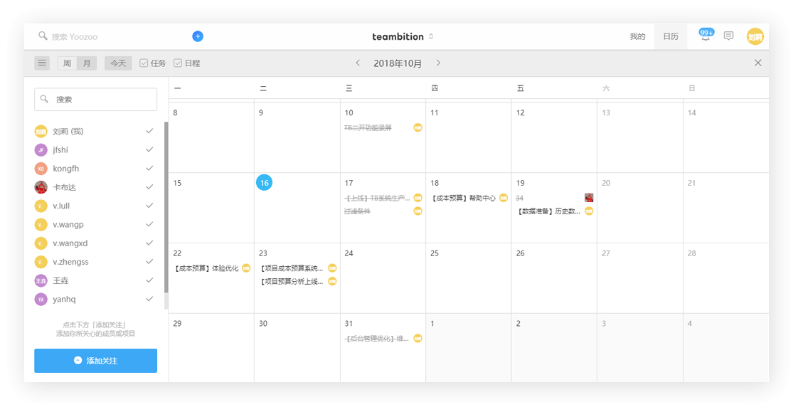
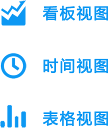
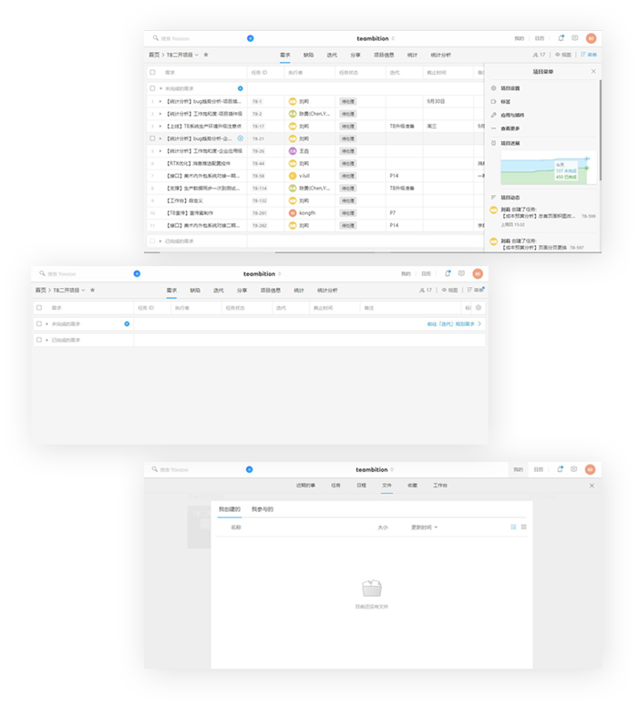
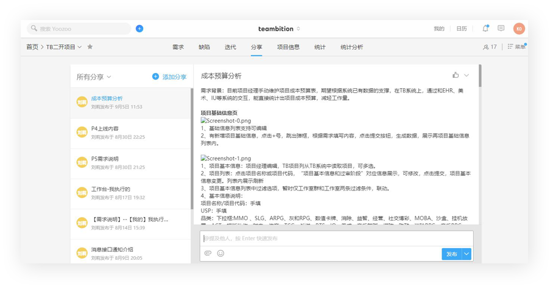
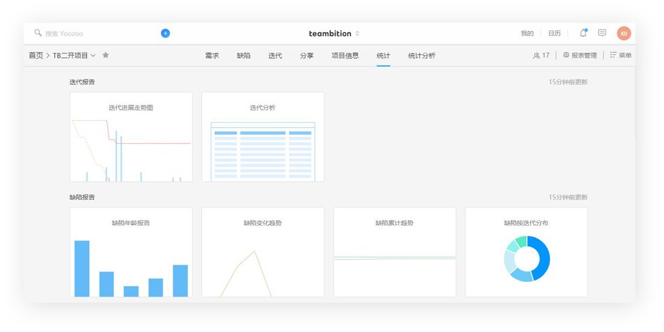

让协作变得更简单
YTB，让协作变得更简单
源于TB，易于上手，全方位协作一次拥有。

直观了解每个人的工作进展
【任务】应用让可以在各种场景下直观地和大家一起推动任务进展，也可以随时展开讨论。



文件储存至云端
【文件】应用是一个可以协作的网盘，随时储存、预览与更新文件，它支持 Word、Excel、Powerpoint、Photoshop、图片、PDF、MP4等多种常用文件的在线预览。拥有协作网盘，让你更加安全协作和邮件抄送Say Bye!
沟通想法，共享知识
无论身在何处，你都可以与团队沟通想法和总结经验。与来回发送内部邮件相比，分享更便于团队讨论和追溯。


总结，为了再出发
统计分析各类数据，帮助团队迭代回顾